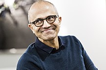

Nadella was born in Hyderabad, Andhra Pradesh, India (now in the state of Telangana) to a family that is originally from Bukkapuram village in Rayalaseema. His father, Bukkapuram Nadella Yugandher, was a civil servant who worked for the Indian Administrative Service of the Government of India. Nadella attended the Hyderabad Public School, Begumpet before receiving a bachelor's in electrical engineering from the Manipal Institute of Technology (then part of Mangalore University) in 1988. Nadella subsequently traveled to the U.S. to study for a M.S. in computer science at the University of Wisconsin–Milwaukee, receiving his degree in 1990. Later, he received an MBA from the University of Chicago.


